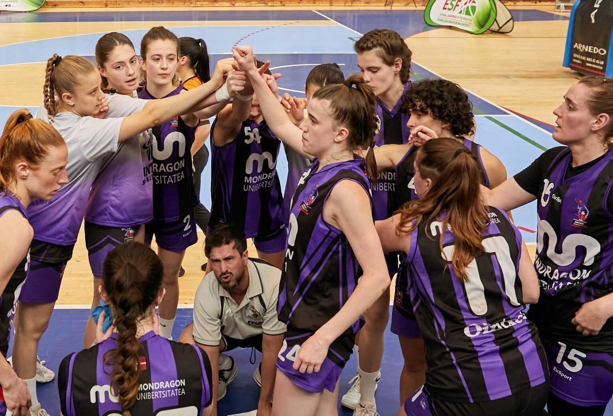
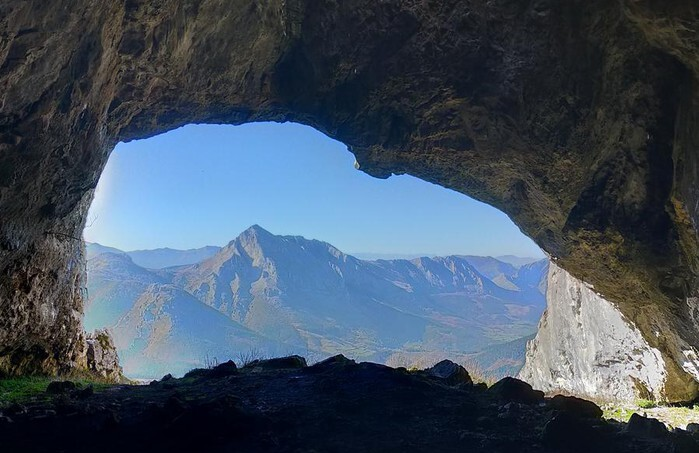
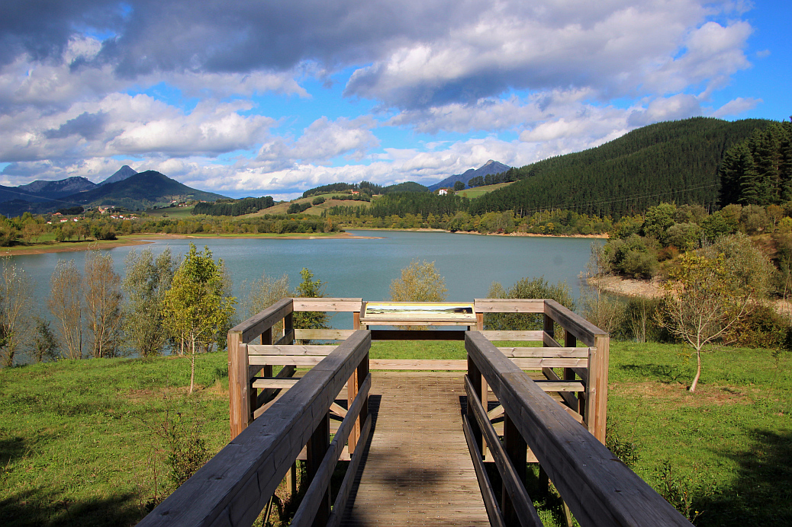
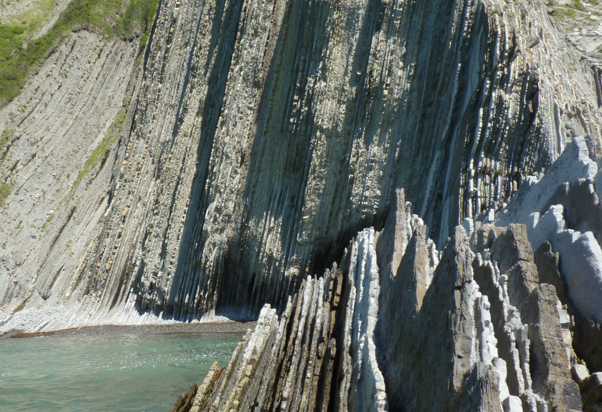
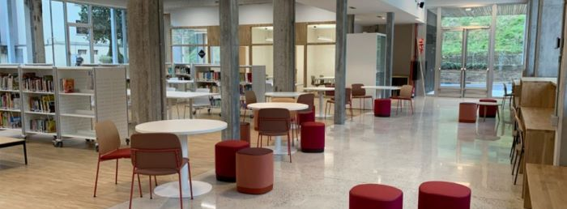
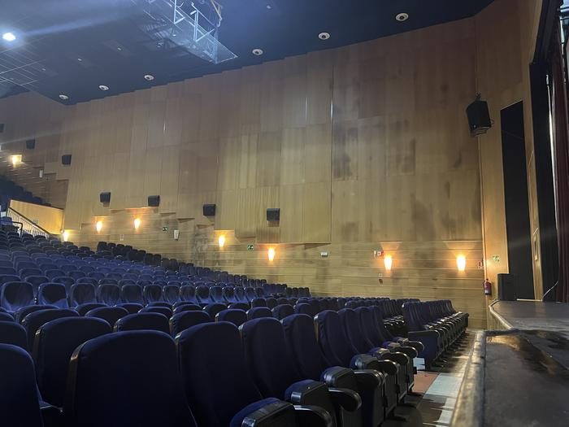
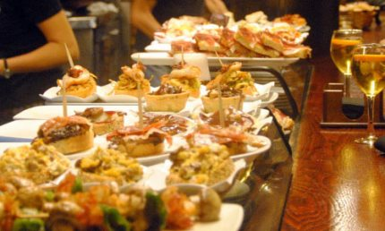
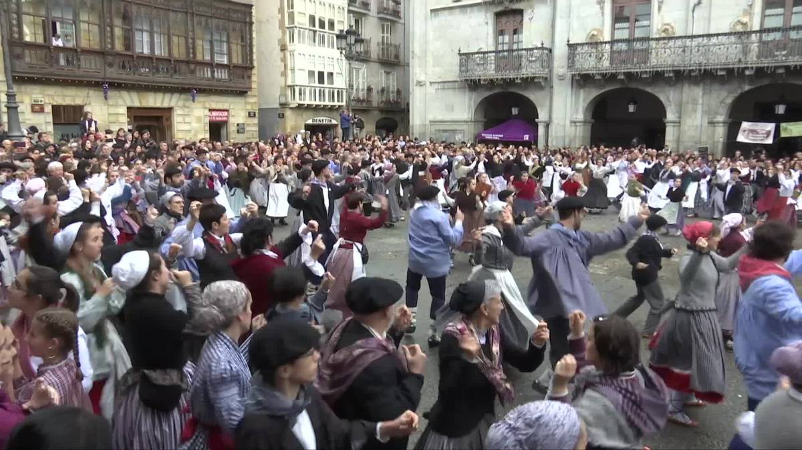

# Tip 1 Embrace Campus Life
Get involved with student clubs or sports teams to immerse yourself in university life!

Joining a club can help you make friends!
 Start a music band with your university friends!
Start a music band with your university friends!
Participating in sports boosts your physical health!
Check out the following options!
# Tip 2 Explore the Outdoors
Hiking Adventures: The Basque Country is a haven for nature lovers. Hike nearby mountains like Udalaitz and Anboto for incredible views.
Weekend Getaways: Plan trips to scenic spots like Gorbea Natural Park or Zumaia’s Flysch cliffs to unwind and recharge. Learn more...

Go hiking to Udalaitz to get the best view of Arrasate and surroundings!

Visit Urkulu it is a great plan to do cycling!

The stunning Flysch cliffs at Zumaia, a perfect getaway.
Check out the following options!
# Tip 3 Academic Success
Take full advantage of the library’s research materials and quiet study spaces for focused learning.

Check out the following options!
# Tip 4 Dive into the Culture
Experience the Basque culture by attending local festivals, trying pintxos, and participating in traditional activities.

Experience the vibrant atmosphere of local festivities.

Try the wide variety of pintxos!

Participate in traditional Basque dances at a local festivities.